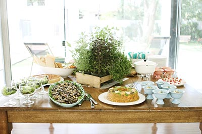

Brunch

INAUGURAÇÃO DE UM LINDO JARDIM
PEQUENOS SANDUICHES DE (NA MESA)
- Finíssimas fatias de lagarto frio, selado com mostarda Ancienne e ervas. Temperado com azeitonas pretas, tomates momotaro, cebola roxa bem picadinha e vinagre balsâmico.
- Carne desfiada temperada como na receita da vovó, em um pãozinho francês crocante.
- Delicioso sanduíche de tirinhas de pernil, marinado em vinhas d´alho e assado lentamente acompanhado por um molho de cubinhos de tomate, azeite extra virgem, flor de sal, salsinha fresca e cebola roxa.
- Rosbife mostarda Djon com mel e rúcula selvagem orgânica
- Fatias de mozarela artesanal de búfala, tomates confitados com azeite extra virgem e pesto rustico de manjericão fresco, Reggiano e pinoli
- Bouquet de baby leaves orgânicas selecionadas acompanha molho de mostarda Dijon e mel de flor de laranjeira e lascas Grana Padano
- Grão-de-bico ao perfume alecrim e lascas bacalhau com raspas limão siciliano e azeite extra virgem
- Tradicional salada do Waldorf Hotel de NY, porém com um toque light. Maçã verde Smith em cubinhos e aipo bem fininhos acompanhados por crocante noz tostada temperados com creme de iogurte, azeite extra virgem, flor de sal
QUENTES NA MESA COM PRATO AO LADO
- Nossa seleção de pães rústicos quentinhos, Grissines e Lavosh
- Berinjela marinada
- Ceviche de robalo com babata doce
- Quiche de brie com pêra
- Cuscuz Paulista de camarão rosa
- Fatias de atum seladas, rosadas por dentro na crosta de gergelim branco e preto por cima de finas e crocantes fatias de erva doce acompanhadas por gomos de laranjas Bahia